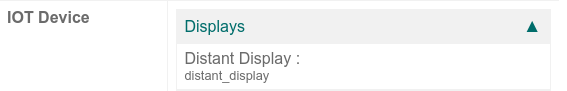

Connect a screen¶
In Odoo, an IoT box can be connected to a screen display. After being configured, the screen can be used to display a Point of Sale (PoS) order to a client.

An example of a PoS (point of sale) order on a screen display.¶
Access the customer display by going to the IoT box homepage and clicking on the PoS Display button. To get to the IoT box homepage, navigate to and click on the IoT box homepage link.
Connection¶
The way to connect the screen display to the IoT box differs depending on the model.
Connect up to two screens with micro-HDMI cables on the side of the IoT box. If two screens are connected, they can display distinct content (see Screen Usage).
Connect the screen with an HDMI cable on the side of the IoT box.
See also
Important
Screen(s) should be connected before the IoT box is switched on. If it is already on, connect the screen(s), and then restart the IoT box by unplugging it for ten seconds and plugging it back into its power source.
Warning
The usage of HDMI/micro-HDMI adapters may cause issues which will result in a blank, black screen on the screen display. Using the specific cable for the display connection is recommended.
If the connection was successful, the screen should display the POS Client display screen.

The screen should also appear in the list of Displays on the IoT box homepage. Alternatively, the display can be seen by accessing .

Note
If no screen is detected, a default display named Distant Display will be displayed instead. This indicates that there is no hardware screen connected.

Usage¶
Show Point of Sale orders to customers¶
To use the screen in the Point of Sale app, go to , select a PoS, click Edit if necessary, and enable the IoT Box feature.
Next, select the screen from the Customer Display drop-down menu. Then click Save, if required.
The screen is now available for PoS sessions. A screen icon will appear in the menu at the top of the screen to indicate the screen’s connection status.
The screen will automatically show the PoS orders and update when changes are made to the order.
Display a website on the screen¶
Open the screen form view by accessing . This allows the user to choose a particular website URL to display on the screen using the Display URL field.